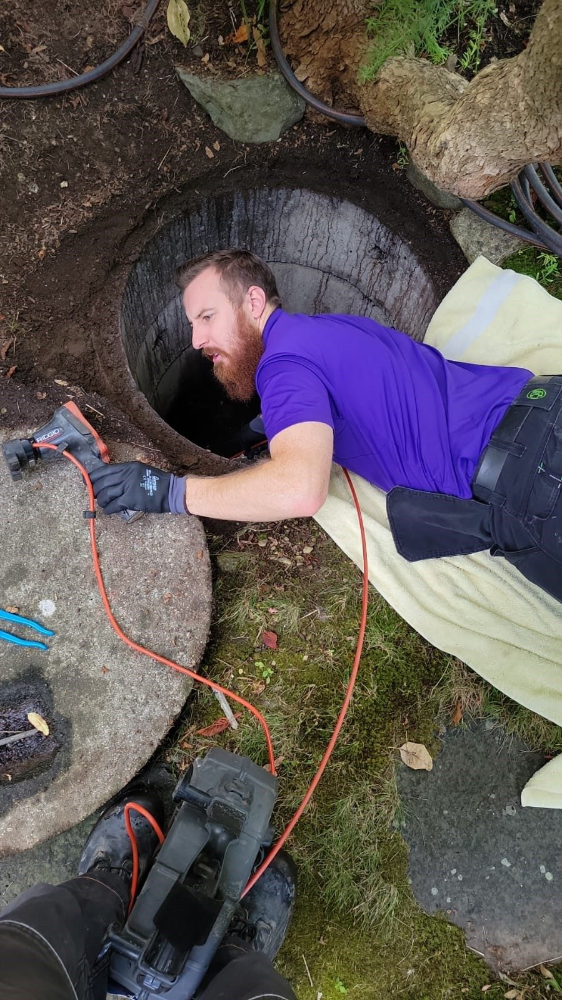
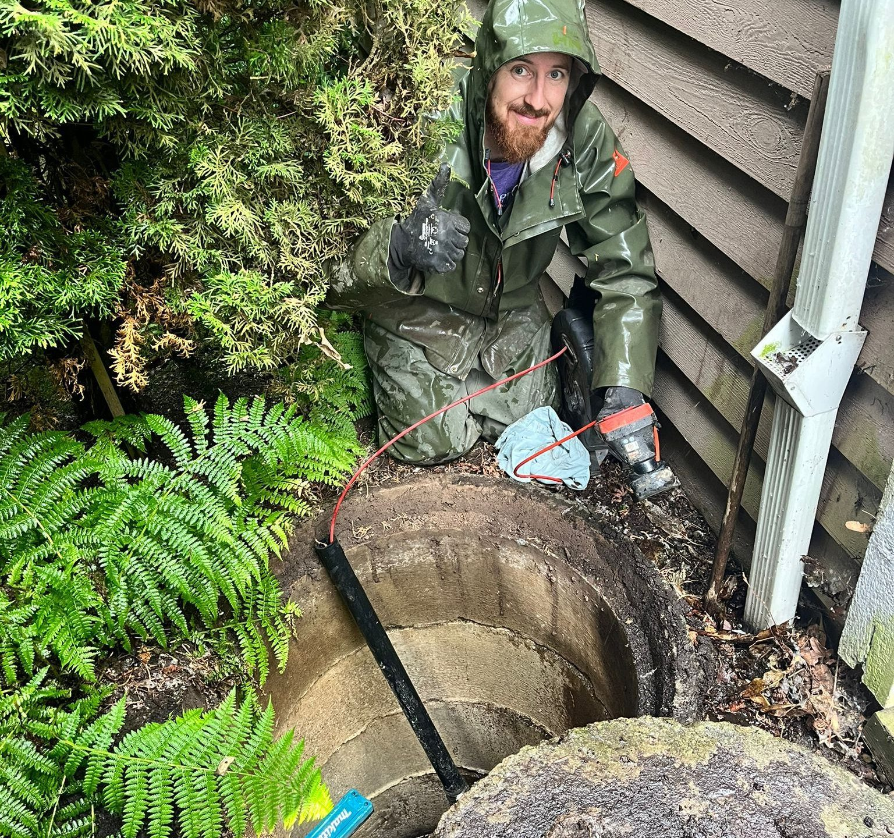
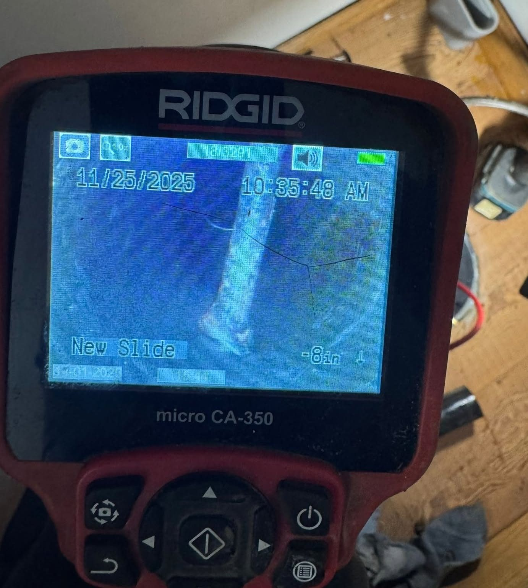
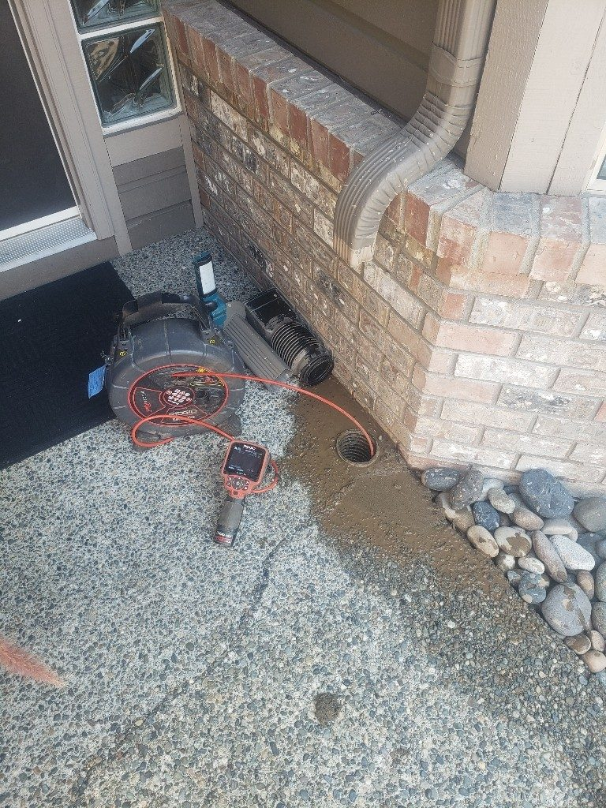

Camera inspections · Burnaby & the Lower Mainland
See what's going on underground
Video inspections of sewer lines, perimeter drains and sumps for homeowners, buyers and strata councils across the Lower Mainland.

Guessing is expensive. A camera inspection shows exactly what's happening in a line: roots, cracks, dips that hold water, sediment, offset joints, or in one Surrey home an electrical grounding rod drilled straight through the sewer. It also locates the problem, so any dig is a small one in the right place.
We inspect sanitary sewer lines, perimeter drainage systems and sumps. You get the footage, a clear explanation of what you're looking at and a written recommendation, which is why buyers, sellers and strata councils use us before decisions get made.
If the inspection turns up work that needs doing, you'll get a price for it; if it turns up nothing, you'll have peace of mind and a baseline for next time.
Price before work starts. Free home plumbing inspection with every call.
Call 778-980-1883 day or night, or send a request and we'll call you back.
From the job
What this work looks like



- 5.0 on Google · 260 reviews
- HomeStars Best of the Best 2025
- BBB A+
- Red Seal journeymen
- Licensed & insured
- Burnaby-based since 2015
Reviews
From people who called about this
Questions
Asked about video camera inspections
Should I get one before buying a house?
Yes, especially for homes built before the 1980s. A failed sewer or perimeter system can cost more than most other inspection findings put together.
Do I get the video?
Yes, along with a written summary of what we found and what we recommend.
Can you find where the pipe runs?
Yes. The camera head is located from the surface so we can mark the line's path and depth.
Is an inspection included with drain cleaning?
We camera after clearing to confirm the line is clear. A full recorded inspection with report is its own service.
Related
Often booked together
Ready when you are, 24/7
Burnaby, New Westminster, Coquitlam, Port Moody, Vancouver, Surrey and Bowen Island.